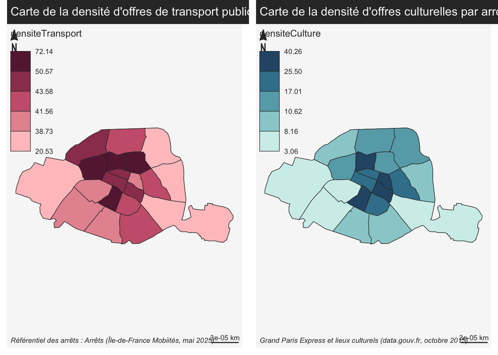

L’accessibilité des lieux culturels de Paris
Kenneth Anderson, Abraham Nkembo Bouesso, Daniel Santos-Sales
2025-04-03
1 Introduction
Notre projet porte sur l’accessibilité des lieux culturels de Paris. Le travail va notamment s’intéresser aux différences entre arrondissements en termes d’offres culturelles et d’offres de transports.
D’une part, dans quelle mesure l’arrondissement dans lequel on vit détermine-t-il le degré d’accès à l’offre culturelle locale ?
D’autre part, dans quelle mesure les lieux culturels de Paris sont-ils desservis via les réseaux de transport ?
2 Données
2.1 Chargement des libraries nécessaires
library(sf)
library(mapsf)
library(units)
library(dplyr)2.2 Importation des données
2.2.1 Le cadastre
# IMPORTER LE CADASTRE DE PARIS
cadastre <- st_read("cadastreParis.json")## Reading layer `cadastreParis' from data source
## `/Users/danielsantos-sales/Desktop/Laqueuedumetro/cadastreParis.json'
## using driver `GeoJSON'
## Simple feature collection with 20 features and 4 fields
## Geometry type: MULTIPOLYGON
## Dimension: XY
## Bounding box: xmin: 2.224079 ymin: 48.81558 xmax: 2.469761 ymax: 48.90216
## Geodetic CRS: WGS 84# AFFICHIER LE CADASTRE DE PARIS
mf_map(cadastre)
mf_layout("Cadastre de Paris", "cadastre.data.gouv\n2025")
2.2.1.1 Conversion des unités de surface : de m2 à km2
# INITIALISATION DES CHAMPS CONCERNANT LES SURFACE
# ET CONVERSION DES UNITÉS DE SURFACE
cadastre$surface_m2 <- st_area(cadastre)
cadastre$surface <- set_units(cadastre$surface_m2, km^2)2.2.2 L’offre culturelle générale
# IMPORTER LES DONNEES DES LIEUX CULTURELS
data_culture <- read.csv("culture.csv", header = TRUE, sep = ";")2.2.3 Les arrêts des réseaux de transport
# IMPORTER LES DONNEES DES ARRETS DE TRANSPORT
transport <- st_read("transport.geojson")## Reading layer `transport' from data source
## `/Users/danielsantos-sales/Desktop/Laqueuedumetro/transport.geojson'
## using driver `GeoJSON'
## Simple feature collection with 37988 features and 15 fields
## Geometry type: POINT
## Dimension: XY
## Bounding box: xmin: 1.149746 ymin: 47.96081 xmax: 3.560668 ymax: 49.45933
## Geodetic CRS: WGS 843 Traitements
3.1 Jointures attributaires
3.1.1 Jointure attributaire : cadastre et transport
# FILTRE : SÉLECTION DES ARRÊTS DE TRANSPORTS À PARIS
transportParis <- transport[substr(transport$arrpostalregion, 1,2) == "75",]
# INITIALISATION D'UNE CLE COMMUNE ENTRE LES TABLES
transportParis$cle <- paste0(transportParis$arrpostalregion)
cadastre$cle <- paste0(cadastre$id)
# JOINTURE
jointure <- st_join(transportParis, cadastre, join = st_within)
# CALCULLER LA SOMME TOTALE DES ARRÊTS PAR ARRONDISSEMENT
arrondissement_arrets <- jointure %>% group_by(cle.x) %>% summarise(nb_arrets = n())
# INITIALISATION DE NOUVEAUX CHAMPS CONCERNANT LES TRANSPORTS DANS LA TABLE DU CADASTRE
cadastre$nb_arrets <- arrondissement_arrets$nb_arrets[match(cadastre$cle, arrondissement_arrets$cle.x)]
cadastre$densiteTransport <- cadastre$nb_arrets/cadastre$surface3.1.2 Jointure attributaire : cadastre et culture
# FILTRE : SÉLECTION DES LIEUX CULTURELS À PARIS
cultureParis <- data_culture[substr(data_culture$CODE_INSEE, 1,2) == "75",]
# INITIALISATION D'UNE CLE COMMUNE ENTRE LES TABLES
cultureParis$cle <- paste0(cultureParis$CODE_INSEE)
# JOINTURE
join_culture <- merge(cultureParis, cadastre, by = "cle")
# CALCULLER LA SOMME TOTALE DES LIEUX CULTURELS PAR ARRONDISSEMENT
arrondissement_lieux <- join_culture %>% group_by(cle) %>% summarise(nb_arrets = n())
# INITIALISATION DE NOUVEAUX CHAMPS CONCERNANT LA CULTURE DANS LA TABLE DU CADASTRE
cadastre$nb_lieux <- arrondissement_lieux$nb_arrets[match(cadastre$cle, arrondissement_lieux$cle)]
cadastre$densiteCulture <- cadastre$nb_lieux/cadastre$surface4 Résultats
# DÉTERMINER LES DIMENSIONS DE LA MATRICE DE PRÉSENTATION (plots)
par(mfrow = c(1,2))
# GÉNÉRER LA CARTE DES TRANSPORTS (plot)
mf_map(cadastre)
mf_layout(title = "Carte de la densité d'offres de transport public par arrondissement (Paris 2025)", credits = "Référentiel des arrêts : Arrêts (Île-de-France Mobiités, mai 2025)")
mf_map(cadastre, pal = "Burg", type = "choro", var = "densiteTransport", add = TRUE)
# GÉNÉRER LA CARTE DES OFFRES CULTURELLES (plot)
mf_map(cadastre)
mf_layout(title = "Carte de la densité d'offres culturelles par arrondissement (Paris 2025)", credits = "Grand Paris Express et lieux culturels (data.gouv.fr, octobre 2015)")
mf_map(cadastre, pal = "Teal",type = "choro", var = "densiteCulture", add = TRUE)
Pour notre projet final, nous avons choisi de nous intéresser au ratio des points d’accès aux transports en commun et à l’offre culturelle de Paris. Est-ce que ces lieux sont accessibles à tous les résidents de la ville ? Est-ce qu’un type d’offre culturelle est plus représentative dans un arrondissement comparativement aux autres ?
D’après les résultats de la carte que nous avons construite avec R, nous constatons que le ratio offre culturelle/points d’accès aux transports en commun varie, mais que la plus forte concentration se situe dans le centre de Paris. Cela n’est pas surprenant, puisque les musées et collections d’art les plus célèbres, les théâtres et les salles de spectacle se trouvent dans la partie la plus ancienne et la plus dense de la ville. Les 6e et 9e arrondissements affichent les ratios les plus élevés de densité de points d’accès aux transports et d’offre culturelle.
En revanche, les 16e et 12e arrondissements affichent les ratios les plus faibles pour ces deux points. Cela peut s’expliquer par le fait que ces arrondissements contiennent davantage de zones exclusivement résidentielles que le reste de Paris, mais qu’ils incluent également les bois de Boulogne et de Vincennes. Ces espaces verts, tel qu’ils sont inclus dans les données des cadastres Etalab, pourraient avoir contribué à une distribution biaisée des points de données pour les points d’accès aux transports et l’offre culturelle dans ces arrondissements.
Ces données nous apprennent que l’accessibilité culturelle à Paris n’est pas répartie uniformément entre les arrondissements. Si le centre-ville offre une offre culturelle dense et diversifiée, facilement accessible via de nombreux points de transport, ce n’est pas le cas en périphérie. Cela suggère une disparité potentielle dans l’accès aux expériences culturelles, notamment pour les résidents des quartiers moins bien desservis.
Une autre dimension mérite d’être explorée : le type d’offre culturelle disponible selon les arrondissements. Le centre de Paris abrite des institutions de renommée internationale comme le Louvre ou l’Opéra Garnier, tandis que les arrondissements périphériques peuvent accueillir des centres culturels plus petits et plus communautaires. Cette différenciation pourrait indiquer une inégalité non seulement spatiale, mais aussi qualitative, avec des implications pour l’inclusion culturelle et la construction identitaire entre les quartiers.
Des analyses plus approfondies pourraient inclure des superpositions démographiques (niveaux de revenus, tranches d’âge, origine migratoire, etc.) afin de comparer ces tendances spatiales aux données socio-économiques. Il pourrait également être utile d’évaluer l’accessibilité temporelle, c’est-à-dire la disponibilité des lieux et des transports à des horaires adaptés aux travailleurs ou aux familles.
En conclusion, alors que Paris est mondialement reconnue pour sa richesse culturelle et son excellent système de transports en commun, cette analyse révèle des modèles nuancés d’accessibilité qui devraient être pris en compte dans la planification future des politiques urbaines et culturelles.